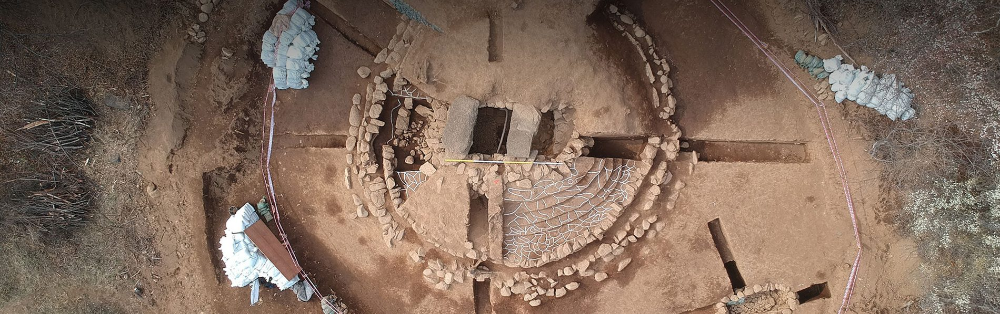

인사말

한화문물연구원을 찾아주신 여러분, 감사합니다.
재단법인 한화문물연구원(韓和文物硏究院)은 고대 한민족의 문화흔적 또는 이와 관련된 고대의 유적과 유물을 고고학적인 연구와 조사연구를 위해 설립되었습니다.
특히, 남과 북으로 갈라진 현재의 고고학적인 한계를 극복하고 통일을 대비하여 한민족(韓民族)이 ‘하나’로 나아가기 위한 화합된 대한(大韓)민족 문화의 정통성을 고고학적인 방향으로 제시하는 연구를 착실히 수행해 나가는 노력을 대과제로 하고 있습니다.
원훈(院訓)
- 성실한 조사연구
- 하나된 민족문화선양
연구방향
-
가야 고대문화 연구
가야지역의 고대문화를 올바르게 해석해 나가기 위하여 동북아 전체의 시각에서 고고학적 관점을 견지하여 다양한 연구를 진행한다.
-
토기·고분문화의 종합적 해석
기존의 연구된 가야지역 토기와 고분문화를 종합적으로 재해석하고 이를 내재적 역동성으로 분석하는 능동적인 연구과제로 삼고 장기적 계획을 수립하여 추진한다.
-
동북아시아 고대문화 비교 연구
고구려, 발해의 고대 문화유산을 한반도를 비롯하여 당시 영토였던 중국의 동북지방 역사자료와 함께한 한(漢), 남북조(南北朝), 수(隋), 당(唐) 등 동일시기 중국 고대국가 관련자료를 입수, 분석, 연구하여 동북아시아의 거시적인 시각 아래 주체적인 역사관을 수립하는 부분을 지속적으로 모색한다.
-
과학적 조사와 기록 보존
지하에 매장된 유적에서의 유구와 유무에 대한 발굴조사과정에서 최신의 과학적인 방법과 분석을 적극 활용하고 이를 보고서 작성 과정에도 적용하여 다원적 시각의 발굴보고서 발간으로 기록보존 방법을 개선토록 노력한다.
이상의 목적과 방향을 가지고 연구와 조사에 적극적으로 행할 수 있도록 (재)한화문물연구원의 전직원과 연구진들이 끊임없이 노력하겠습니다.
재단법인 한화문물연구원 원장 신용민